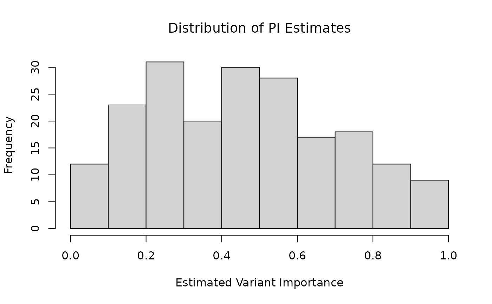

Estimates variant-importance scores (PI) based on functional annotations using supervised learning. The function trains an ensemble of prediction models (LASSO or GLM) on case and control annotations and applies them to testing data to estimate the relative importance of each variant for the phenotype of interest.
get_PI(
training_caseAnnotation,
training_controlAnnotation,
training_control_need_N,
model_need_N,
modelType,
testing_annotations
)Numeric matrix (N_case x M) of functional annotation scores for case variants (known causal variants from training data). Each row represents one variant, each column represents one annotation feature.
Numeric matrix (N_control x M) of functional annotation scores for control variants (known non-causal variants from training data). Must have the same number of columns as training_caseAnnotation.
Integer, number of control variants to sample for each model in the ensemble. Should be less than or equal to nrow(training_controlAnnotation). Typically chosen to balance the training dataset (e.g., equal to or 2-3 times nrow(training_caseAnnotation)).
Integer, number of models to fit in the ensemble. Higher values increase prediction stability at the cost of computation time. Typical values: 5-20.
Character string specifying the model type: "LASSO" or "GLM".
"LASSO": L1-regularized logistic regression with automatic feature selection via cross-validation. Recommended when M is large or features are correlated.
"GLM": Standard logistic regression using all features. Recommended when M is small relative to N_case and features are relatively independent.
Numeric matrix or data frame (N_test x M) of functional annotation scores for the variants being analyzed. Must have the same columns (annotation features) as the training data.
A numeric vector of length N_test containing estimated variant-importance scores (PI values) for each variant in testing_annotations. Values are in the range (0, 1), where higher values indicate higher estimated importance based on the annotation profile.
Methodology:
This function implements annotation-based variant-importance estimation for the GLOW framework. The key idea is to leverage functional annotations (e.g., CADD, PolyPhen, conservation scores) to estimate which variants are more likely to be important, allowing GLOW to upweight likely important variants in the association test.
Algorithm:
Ensemble Model Training:
For i = 1 to model_need_N:
Sample training_control_need_N controls randomly from training_controlAnnotation
Combine all cases with sampled controls
Fit a logistic regression model (LASSO or GLM) predicting case/control status (1 for cases, 0 for controls) from annotations
This creates model_need_N independent models
Prediction:
Apply each of the model_need_N models to testing_annotations
Average predictions across models to obtain final PI estimates
Why Ensemble Approach?
Using multiple models with different control samples:
Reduces dependence on specific control sample
Improves prediction stability and robustness
Accounts for variability in control annotations
Provides implicit uncertainty quantification
LASSO vs GLM:
Use LASSO when:
Number of annotations M is large (e.g., M > 20)
Annotations are correlated
You want automatic feature selection
Sample size is limited relative to M
Use GLM when:
Number of annotations M is small (e.g., M < 10)
Sample size is large relative to M
All annotations are believed to be informative
You want interpretable coefficients for all features
Training Data Requirements:
Good training data should have:
Cases: Variants known or strongly suspected to be associated with the phenotype (e.g., from previous GWAS hits, Mendelian variants, functional studies)
Controls: Variants known or strongly suspected to be neutral (e.g., common synonymous variants, intergenic variants far from genes)
Same trait: Training and testing data should be for the same or similar phenotype
Sufficient sample size: At least 50-100 cases recommended; controls should be 2-10x more abundant
Annotation Data Format:
Each annotation should be:
Numeric (continuous or ordinal)
Higher values should generally indicate higher pathogenicity (if opposite, multiply by -1 before input)
Reasonably scaled (extreme ranges may require normalization)
Available for all variants (no missing values)
Common annotations include:
CADD: Combined Annotation Dependent Depletion
PolyPhen-2: Prediction of functional effects
SIFT: Sorts Intolerant From Tolerant
GERP: Genomic Evolutionary Rate Profiling
PhyloP/PhastCons: Conservation scores
Functional class indicators (missense, LoF, etc.)
O(model_need_N * cost_per_model + N_test * model_need_N * M) where:
For LASSO: cost_per_model = O(N_train * M * n_lambda) with cross-validation
For GLM: cost_per_model = O(N_train * M^2) for matrix inversion
Prediction: O(N_test * model_need_N * M)
Typical runtime: seconds to minutes depending on M and model_need_N.
training_caseAnnotation and training_controlAnnotation have the same number and types of columns
testing_annotations has the same columns as training data
training_control_need_N <= nrow(training_controlAnnotation)
No missing values in annotation data
Annotations are informative for case/control status
PI values close to 1: High predicted importance (based on annotations similar to known associated variants)
PI values close to 0: Low predicted importance (based on annotations similar to known neutral variants)
PI values near 0.5: Uncertain prediction (annotations don't strongly favor associated or neutral)
The estimated PI values are then used as input to Optimal_Weights_M
to calculate optimal weights that incorporate biological prior knowledge.
For LASSO models, the optimal lambda parameter is selected using 10-fold cross-validation (default in cv.glmnet) to minimize binomial deviance. Each model in the ensemble performs its own cross-validation, which can lead to different levels of sparsity across ensemble members.
Zhang, H., Liu, M., Landers, J. E., and Wu, Z. Integrated Weighted Association Test with Application to Genetic Association Studies. Annals of Applied Statistics (in revision).
Ionita-Laza, I., Lee, S., Makarov, V., Buxbaum, J. D., and Lin, X. (2013). Sequence kernel association tests for the combined effect of rare and common variants. The American Journal of Human Genetics, 92(6), 841-853.
Friedman, J., Hastie, T., and Tibshirani, R. (2010). Regularization paths for generalized linear models via coordinate descent. Journal of Statistical Software, 33(1), 1-22.
model_PI: Generate ensemble of PI prediction models
LASSOmodel: Fit single LASSO model (internal)
GLMmodel: Fit single GLM model (internal)
Optimal_Weights_M: Calculate optimal weights using PI estimates
# Example 1: Basic usage with LASSO
set.seed(123)
# Simulate training data: cases have higher annotation scores
n_case <- 100
n_control <- 500
n_anno <- 5
training_case <- matrix(rnorm(n_case * n_anno, mean = 0.5, sd = 1),
ncol = n_anno)
training_control <- matrix(rnorm(n_control * n_anno, mean = 0, sd = 1),
ncol = n_anno)
colnames(training_case) <- colnames(training_control) <- paste0("Anno", 1:n_anno)
# Simulate testing data
n_test <- 200
testing_anno <- matrix(rnorm(n_test * n_anno, mean = 0.2, sd = 1),
ncol = n_anno)
colnames(testing_anno) <- paste0("Anno", 1:n_anno)
# Estimate PI using LASSO ensemble
PI_estimates <- get_PI(
training_caseAnnotation = training_case,
training_controlAnnotation = training_control,
training_control_need_N = 100,
model_need_N = 10,
modelType = "LASSO",
testing_annotations = testing_anno
)
# Check output
summary(PI_estimates)
#> Min. 1st Qu. Median Mean 3rd Qu. Max.
#> 0.01749 0.25439 0.44533 0.45396 0.62292 0.95885
hist(PI_estimates, main = "Distribution of PI Estimates",
xlab = "Estimated Variant Importance")

if (FALSE) { # \dontrun{
# Example 2: Using GLM instead of LASSO
PI_glm <- get_PI(
training_caseAnnotation = training_case,
training_controlAnnotation = training_control,
training_control_need_N = 100,
model_need_N = 10,
modelType = "GLM",
testing_annotations = testing_anno
)
# Compare LASSO vs GLM predictions
plot(PI_estimates, PI_glm,
xlab = "LASSO PI", ylab = "GLM PI",
main = "LASSO vs GLM PI Estimates")
abline(0, 1, col = "red")
cor(PI_estimates, PI_glm)
# Example 3: Using real annotation data (conceptual)
# Load variant annotations (CADD, PolyPhen, etc.)
# case_anno <- read.csv("causal_variants_annotations.csv")
# control_anno <- read.csv("neutral_variants_annotations.csv")
# test_anno <- read.csv("study_variants_annotations.csv")
#
# PI_real <- get_PI(
# training_caseAnnotation = as.matrix(case_anno),
# training_controlAnnotation = as.matrix(control_anno),
# training_control_need_N = 200,
# model_need_N = 20,
# modelType = "LASSO",
# testing_annotations = as.matrix(test_anno)
# )
} # }